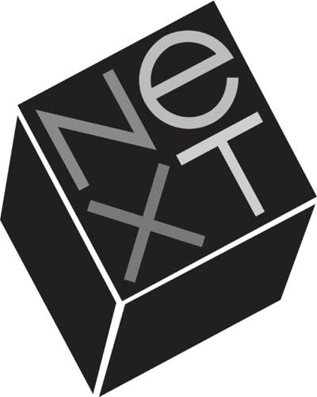

NeXT
Prometheus Unbound

Upon his return from Europe in August 1985, while he was casting about for what to do next, Jobs called the Stanford biochemist Paul Berg to discuss the advances that were being made in gene splicing and recombinant DNA. Berg described how difficult it was to do experiments in a biology lab, where it could take weeks to nurture an experiment and get a result. "Why don't you simulate them on a computer?" Jobs asked. Berg replied that computers with such capacities were too expensive for university labs. "Suddenly, he was excited about the possibilities," Berg recalled. "He had it in his mind to start a new company. He was young and rich, and had to find something to do with the rest of his life."
Jobs had already been canvassing academics to ask what their workstation needs were. It was something he had been interested in since 1983, when he had visited the computer science department at Brown to show off the Macintosh, only to be told that it would take a far more powerful machine to do anything useful in a university lab. The dream of academic researchers was to have a workstation that was both powerful and personal. As head of the Macintosh division, Jobs had launched a project to build such a machine, which was dubbed the Big Mac. It would have a UNIX operating system but with the friendly Macintosh interface. But after Jobs was ousted from the Macintosh division, his replacement, Jean-Louis Gassée, canceled the Big Mac.
When that happened, Jobs got a distressed call from Rich Page, who had been engineering the Big Mac's chip set. It was the latest in a series of conversations that Jobs was having with disgruntled Apple employees urging him to start a new company and rescue them. Plans to do so began to jell over Labor Day weekend, when Jobs spoke to Bud Tribble, the original Macintosh software chief, and floated the idea of starting a company to build a powerful but personal workstation. He also enlisted two other Macintosh division employees who had been talking about leaving, the engineer George Crow and the controller Susan Barnes.
That left one key vacancy on the team: a person who could market the new product to universities. The obvious candidate was Dan'l Lewin, who at Apple had organized a consortium of universities to buy Macintosh computers in bulk. Besides missing two letters in his first name, Lewin had the chiseled good looks of Clark Kent and a Princetonian's polish. He and Jobs shared a bond: Lewin had written a Princeton thesis on Bob Dylan and charismatic leadership, and Jobs knew something about both of those topics.
Lewin's university consortium had been a godsend to the Macintosh group, but he had become frustrated after Jobs left and Bill Campbell had reorganized marketing in a way that reduced the role of direct sales to universities. He had been meaning to call Jobs when, that Labor Day weekend, Jobs called first. He drove to Jobs's unfurnished mansion, and they walked the grounds while discussing the possibility of creating a new company. Lewin was excited, but not ready to commit. He was going to Austin with Campbell the following week, and he wanted to wait until then to decide. Upon his return, he gave his answer: He was in. The news came just in time for the September 13 Apple board meeting.
Although Jobs was still nominally the board's chairman, he had not been to any meetings since he lost power. He called Sculley, said he was going to attend, and asked that an item be added to the end of the agenda for a "chairman's report." He didn't say what it was about, and Sculley assumed it would be a criticism of the latest reorganization. Instead, when his turn came to speak, Jobs described to the board his plans to start a new company. "I've been thinking a lot, and it's time for me to get on with my life," he began. "It's obvious that I've got to do something. I'm thirty years old." Then he referred to some prepared notes to describe his plan to create a computer for the higher education market. The new company would not be competitive with Apple, he promised, and he would take with him only a handful of non-key personnel. He offered to resign as chairman of Apple, but he expressed hope that they could work together. Perhaps Apple would want to buy the distribution rights to his product, he suggested, or license Macintosh software to it.
Mike Markkula rankled at the possibility that Jobs would hire anyone from Apple. "Why would you take anyone at all?" he asked.
"Don't get upset," Jobs assured him and the rest of the board. "These are very low-level people that you won't miss, and they will be leaving anyway."
The board initially seemed disposed to wish Jobs well in his venture. After a private discussion, the directors even proposed that Apple take a 10% stake in the new company and that Jobs remain on the board.
That night Jobs and his five renegades met again at his house for dinner. He was in favor of taking the Apple investment, but the others convinced him it was unwise. They also agreed that it would be best if they resigned all at once, right away. Then they could make a clean break.
So Jobs wrote a formal letter telling Sculley the names of the five who would be leaving, signed it in his spidery lowercase signature, and drove to Apple the next morning to hand it to him before his 7:30 staff meeting.
"Steve, these are not low-level people," Sculley said.
"Well, these people were going to resign anyway," Jobs replied. "They are going to be handing in their resignations by nine this morning."
From Jobs's perspective, he had been honest. The five were not division managers or members of Sculley's top team. They had all felt diminished, in fact, by the company's new organization. But from Sculley's perspective, these were important players; Page was an Apple Fellow, and Lewin was a key to the higher education market. In addition, they knew about the plans for Big Mac; even though it had been shelved, this was still proprietary information. Nevertheless Sculley was sanguine. Instead of pushing the point, he asked Jobs to remain on the board. Jobs replied that he would think about it.
But when Sculley walked into his 7:30 staff meeting and told his top lieutenants who was leaving, there was an uproar. Most of them felt that Jobs had breached his duties as chairman and displayed stunning disloyalty to the company. "We should expose him for the fraud that he is so that people here stop regarding him as a messiah," Campbell shouted, according to Sculley.
Campbell admitted that, although he later became a great Jobs defender and supportive board member, he was ballistic that morning. "I was fucking furious, especially about him taking Dan'l Lewin," he recalled. "Dan'l had built the relationships with the universities. He was always muttering about how hard it was to work with Steve, and then he left." Campbell was so angry that he walked out of the meeting to call Lewin at home. When his wife said he was in the shower, Campbell said, "I'll wait." A few minutes later, when she said he was still in the shower, Campbell again said, "I'll wait." When Lewin finally came on the phone, Campbell asked him if it was true. Lewin acknowledged it was. Campbell hung up without saying another word.
After hearing the fury of his senior staff, Sculley surveyed the members of the board. They likewise felt that Jobs had misled them with his pledge that he would not raid important employees. Arthur Rock was especially angry. Even though he had sided with Sculley during the Memorial Day showdown, he had been able to repair his paternal relationship with Jobs. Just the week before, he had invited Jobs to bring his girlfriend up to San Francisco so that he and his wife could meet her, and the four had a nice dinner in Rock's Pacific Heights home. Jobs had not mentioned the new company he was forming, so Rock felt betrayed when he heard about it from Sculley. "He came to the board and lied to us," Rock growled later. "He told us he was thinking of forming a company when in fact he had already formed it. He said he was going to take a few middle-level people. It turned out to be five senior people." Markkula, in his subdued way, was also offended. "He took some top executives he had secretly lined up before he left. That's not the way you do things. It was ungentlemanly."
Over the weekend both the board and the executive staff convinced Sculley that Apple would have to declare war on its cofounder. Markkula issued a formal statement accusing Jobs of acting "in direct contradiction to his statements that he wouldn't recruit any key Apple personnel for his company." He added ominously, "We are evaluating what possible actions should be taken." Campbell was quoted in the Wall Street Journal as saying he "was stunned and shocked" by Jobs's behavior.
Jobs had left his meeting with Sculley thinking that things might proceed smoothly, so he had kept quiet. But after reading the newspapers, he felt that he had to respond. He phoned a few favored reporters and invited them to his home for private briefings the next day. Then he called Andy Cunningham, who had handled his publicity at Regis McKenna. "I went over to his unfurnished mansiony place in Woodside," she recalled, "and I found him huddled in the kitchen with his five colleagues and a few reporters hanging outside on the lawn." Jobs told her that he was going to do a full-fledged press conference and started spewing some of the derogatory things he was going to say. Cunningham was appalled. "This is going to reflect badly on you," she told him. Finally he backed down. He decided that he would give the reporters a copy of the resignation letter and limit any on-the-record comments to a few bland statements.
Jobs had considered just mailing in his letter of resignation, but Susan Barnes convinced him that this would be too contemptuous. Instead he drove it to Markkula's house, where he also found Al Eisenstat. There was a tense conversation for about fifteen minutes; then Barnes, who had been waiting outside, came to the door to retrieve him before he said anything he would regret. He left behind the letter, which he had composed on a Macintosh and printed on the new LaserWriter:
September 17, 1985
Dear Mike:
This morning's papers carried suggestions that Apple is considering removing me as Chairman. I don't know the source of these reports but they are both misleading to the public and unfair to me.
You will recall that at last Thursday's Board meeting I stated I had decided to start a new venture and I tendered my resignation as Chairman.
The Board declined to accept my resignation and asked me to defer it for a week. I agreed to do so in light of the encouragement the Board offered with regard to the proposed new venture and the indications that Apple would invest in it. On Friday, after I told John Sculley who would be joining me, he confirmed Apple's willingness to discuss areas of possible collaboration between Apple and my new venture.
Subsequently the Company appears to be adopting a hostile posture toward me and the new venture. Accordingly, I must insist upon the immediate acceptance of my resignation... .
As you know, the company's recent reorganization left me with no work to do and no access even to regular management reports. I am but 30 and want still to contribute and achieve.
After what we have accomplished together, I would wish our parting to be both amicable and dignified.
Yours sincerely, steven p. jobs
When a guy from the facilities team went to Jobs's office to pack up his belongings, he saw a picture frame on the floor. It contained a photograph of Jobs and Sculley in warm conversation, with an inscription from seven months earlier: "Here's to Great Ideas, Great Experiences, and a Great Friendship! John." The glass frame was shattered. Jobs had hurled it across the room before leaving. From that day, he never spoke to Sculley again.
Apple's stock went up a full point, or almost 7%, when Jobs's resignation was announced. "East Coast stockholders always worried about California flakes running the company," explained the editor of a tech stock newsletter. "Now with both Wozniak and Jobs out, those shareholders are relieved." But Nolan Bushnell, the Atari founder who had been an amused mentor ten years earlier, told Time that Jobs would be badly missed. "Where is Apple's inspiration going to come from? Is Apple going to have all the romance of a new brand of Pepsi?"
After a few days of failed efforts to reach a settlement with Jobs, Sculley and the Apple board decided to sue him "for breaches of fiduciary obligations." The suit spelled out his alleged transgressions:
Notwithstanding his fiduciary obligations to Apple, Jobs, while serving as the Chairman of Apple's Board of Directors and an officer of Apple and pretending loyalty to the interests of Apple ...
(a) secretly planned the formation of an enterprise to compete with Apple;
(b) secretly schemed that his competing enterprise would wrongfully take advantage of and utilize Apple's plan to design, develop and market the Next Generation Product ...
(c) secretly lured away key employees of Apple.
At the time, Jobs owned 6.5 million shares of Apple stock, 11% of the company, worth more than $100 million. He began to sell his shares, and within five months had dumped them all, retaining only one share so he could attend shareholder meetings if he wanted. He was furious, and that was reflected in his passion to start what was, no matter how he spun it, a rival company. "He was angry at Apple," said Joanna Hoffman, who briefly went to work for the new company. "Aiming at the educational market, where Apple was strong, was simply Steve being vengeful. He was doing it for revenge."
Jobs, of course, didn't see it that way. "I haven't got any sort of odd chip on my shoulder," he told Newsweek. Once again he invited his favorite reporters over to his Woodside home, and this time he did not have Andy Cunningham there urging him to be circumspect. He dismissed the allegation that he had improperly lured the five colleagues from Apple. "These people all called me," he told the gaggle of journalists who were milling around in his unfurnished living room. "They were thinking of leaving the company. Apple has a way of neglecting people."
He decided to cooperate with a Newsweek cover in order to get his version of the story out, and the interview he gave was revealing. "What I'm best at doing is finding a group of talented people and making things with them," he told the magazine. He said that he would always harbor affection for Apple. "I'll always remember Apple like any man remembers the first woman he's fallen in love with." But he was also willing to fight with its management if need be. "When someone calls you a thief in public, you have to respond." Apple's threat to sue him was outrageous. It was also sad. It showed that Apple was no longer a confident, rebellious company. "It's hard to think that a $2 billion company with 4,300 employees couldn't compete with six people in blue jeans."
To try to counter Jobs's spin, Sculley called Wozniak and urged him to speak out. "Steve can be an insulting and hurtful guy," he told Time that week. He revealed that Jobs had asked him to join his new firm—it would have been a sly way to land another blow against Apple's current management—but he wanted no part of such games and had not returned Jobs's phone call. To the San Francisco Chronicle, he recounted how Jobs had blocked frogdesign from working on his remote control under the pretense that it might compete with Apple products. "I look forward to a great product and I wish him success, but his integrity I cannot trust," Wozniak said.
"The best thing ever to happen to Steve is when we fired him, told him to get lost," Arthur Rock later said. The theory, shared by many, is that the tough love made him wiser and more mature. But it's not that simple. At the company he founded after being ousted from Apple, Jobs was able to indulge all of his instincts, both good and bad. He was unbound. The result was a series of spectacular products that were dazzling market flops. This was the true learning experience. What prepared him for the great success he would have in Act III was not his ouster from his Act I at Apple but his brilliant failures in Act II.
The first instinct that he indulged was his passion for design. The name he chose for his new company was rather straightforward: Next. In order to make it more distinctive, he decided he needed a world-class logo. So he courted the dean of corporate logos, Paul Rand. At seventy-one, the Brooklyn-born graphic designer had already created some of the best-known logos in business, including those of Esquire, IBM, Westinghouse, ABC, and UPS. He was under contract to IBM, and his supervisors there said that it would obviously be a conflict for him to create a logo for another computer company. So Jobs picked up the phone and called IBM's CEO, John Akers. Akers was out of town, but Jobs was so persistent that he was finally put through to Vice Chairman Paul Rizzo. After two days, Rizzo concluded that it was futile to resist Jobs, and he gave permission for Rand to do the work.
Rand flew out to Palo Alto and spent time walking with Jobs and listening to his vision. The computer would be a cube, Jobs pronounced. He loved that shape. It was perfect and simple. So Rand decided that the logo should be a cube as well, one that was tilted at a 28° angle. When Jobs asked for a number of options to consider, Rand declared that he did not create different options for clients. "I will solve your problem, and you will pay me," he told Jobs. "You can use what I produce, or not, but I will not do options, and either way you will pay me."
Jobs admired that kind of thinking, so he made what was quite a gamble. The company would pay an astonishing $100,000 flat fee to get one design. "There was a clarity in our relationship," Jobs said. "He had a purity as an artist, but he was astute at solving business problems. He had a tough exterior, and had perfected the image of a curmudgeon, but he was a teddy bear inside." It was one of Jobs's highest praises: purity as an artist.
It took Rand just two weeks. He flew back to deliver the result to Jobs at his Woodside house. First they had dinner, then Rand handed him an elegant and vibrant booklet that described his thought process. On the final spread, Rand presented the logo he had chosen. "In its design, color arrangement, and orientation, the logo is a study in contrasts," his booklet proclaimed. "Tipped at a jaunty angle, it brims with the informality, friendliness, and spontaneity of a Christmas seal and the authority of a rubber stamp." The word "next" was split into two lines to fill the square face of the cube, with only the "e" in lowercase. That letter stood out, Rand's booklet explained, to connote "education, excellence ... e = mc2."
It was often hard to predict how Jobs would react to a presentation. He could label it shitty or brilliant; one never knew which way he might go. But with a legendary designer such as Rand, the chances were that Jobs would embrace the proposal. He stared at the final spread, looked up at Rand, and then hugged him. They had one minor disagreement: Rand had used a dark yellow for the "e" in the logo, and Jobs wanted him to change it to a brighter and more traditional yellow. Rand banged his fist on the table and declared, "I've been doing this for fifty years, and I know what I'm doing." Jobs relented.
The company had not only a new logo, but a new name. No longer was it Next. It was NeXT. Others might not have understood the need to obsess over a logo, much less pay $100,000 for one. But for Jobs it meant that NeXT was starting life with a world-class feel and identity, even if it hadn't yet designed its first product. As Markkula had taught him, a great company must be able to impute its values from the first impression it makes.
As a bonus, Rand agreed to design a personal calling card for Jobs. He came up with a colorful type treatment, which Jobs liked, but they ended up having a lengthy and heated disagreement about the placement of the period after the "P" in Steven P. Jobs. Rand had placed the period to the right of the "P.", as it would appear if set in lead type. Steve preferred the period to be nudged to the left, under the curve of the "P.", as is possible with digital typography. "It was a fairly large argument about something relatively small," Susan Kare recalled. On this one Jobs prevailed.
In order to translate the NeXT logo into the look of real products, Jobs needed an industrial designer he trusted. He talked to a few possibilities, but none of them impressed him as much as the wild Bavarian he had imported to Apple: Hartmut Esslinger, whose frogdesign had set up shop in Silicon Valley and who, thanks to Jobs, had a lucrative contract with Apple. Getting IBM to permit Paul Rand to do work for NeXT was a small miracle willed into existence by Jobs's belief that reality can be distorted. But that was a snap compared to the likelihood that he could convince Apple to permit Esslinger to work for NeXT.
This did not keep Jobs from trying. At the beginning of November 1985, just five weeks after Apple filed suit against him, Jobs wrote to Eisenstat and asked for a dispensation. "I spoke with Hartmut Esslinger this weekend and he suggested I write you a note expressing why I wish to work with him and frogdesign on the new products for NeXT," he said. Astonishingly, Jobs's argument was that he did not know what Apple had in the works, but Esslinger did. "NeXT has no knowledge as to the current or future directions of Apple's product designs, nor do other design firms we might deal with, so it is possible to inadvertently design similar looking products. It is in both Apple's and NeXT's best interest to rely on Hartmut's professionalism to make sure this does not occur." Eisenstat recalled being flabbergasted by Jobs's audacity, and he replied curtly. "I have previously expressed my concern on behalf of Apple that you are engaged in a business course which involves your utilization of Apple's confidential business information," he wrote. "Your letter does not alleviate my concern in any way. In fact it heightens my concern because it states that you have ‘no knowledge as to the current or future directions of Apple's product designs,' a statement which is not true." What made the request all the more astonishing to Eisenstat was that it was Jobs who, just a year earlier, had forced frogdesign to abandon its work on Wozniak's remote control device.
Jobs realized that in order to work with Esslinger (and for a variety of other reasons), it would be necessary to resolve the lawsuit that Apple had filed. Fortunately Sculley was willing. In January 1986 they reached an out-of-court agreement involving no financial damages. In return for Apple's dropping its suit, NeXT agreed to a variety of restrictions: Its product would be marketed as a high-end workstation, it would be sold directly to colleges and universities, and it would not ship before March 1987. Apple also insisted that the NeXT machine "not use an operating system compatible with the Macintosh," though it could be argued that Apple would have been better served by insisting on just the opposite.
After the settlement Jobs continued to court Esslinger until the designer decided to wind down his contract with Apple. That allowed frogdesign to work with NeXT at the end of 1986. Esslinger insisted on having free rein, just as Paul Rand had. "Sometimes you have to use a big stick with Steve," he said. Like Rand, Esslinger was an artist, so Jobs was willing to grant him indulgences he denied other mortals.
Jobs decreed that the computer should be an absolutely perfect cube, with each side exactly a foot long and every angle precisely 90 degrees. He liked cubes. They had gravitas but also the slight whiff of a toy. But the NeXT cube was a Jobsian example of design desires trumping engineering considerations. The circuit boards, which fitted nicely into the traditional pizza-box shape, had to be reconfigured and stacked in order to nestle into a cube.
Even worse, the perfection of the cube made it hard to manufacture. Most parts that are cast in molds have angles that are slightly greater than pure 90 degrees, so that it's easier to get them out of the mold (just as it is easier to get a cake out of a pan that has angles slightly greater than 90 degrees). But Esslinger dictated, and Jobs enthusiastically agreed, that there would be no such "draft angles" that would ruin the purity and perfection of the cube. So the sides had to be produced separately, using molds that cost $650,000, at a specialty machine shop in Chicago. Jobs's passion for perfection was out of control. When he noticed a tiny line in the chassis caused by the molds, something that any other computer maker would accept as unavoidable, he flew to Chicago and convinced the die caster to start over and do it perfectly. "Not a lot of die casters expect a celebrity to fly in," noted one of the engineers. Jobs also had the company buy a $150,000 sanding machine to remove all lines where the mold faces met and insisted that the magnesium case be a matte black, which made it more susceptible to showing blemishes.
Jobs had always indulged his obsession that the unseen parts of a product should be crafted as beautifully as its façade, just as his father had taught him when they were building a fence. This too he took to extremes when he found himself unfettered at NeXT. He made sure that the screws inside the machine had expensive plating. He even insisted that the matte black finish be coated onto the inside of the cube's case, even though only repairmen would see it.
Joe Nocera, then writing for Esquire, captured Jobs's intensity at a NeXT staff meeting:
It's not quite right to say that he is sitting through this staff meeting, because Jobs doesn't sit through much of anything; one of the ways he dominates is through sheer movement. One moment he's kneeling in his chair; the next minute he's slouching in it; the next he has leaped out of his chair entirely and is scribbling on the blackboard directly behind him. He is full of mannerisms. He bites his nails. He stares with unnerving earnestness at whoever is speaking. His hands, which are slightly and inexplicably yellow, are in constant motion.
What particularly struck Nocera was Jobs's "almost willful lack of tact." It was more than just an inability to hide his opinions when others said something he thought dumb; it was a conscious readiness, even a perverse eagerness, to put people down, humiliate them, show he was smarter. When Dan'l Lewin handed out an organization chart, for example, Jobs rolled his eyes. "These charts are bullshit," he interjected. Yet his moods still swung wildly, as at Apple. A finance person came into the meeting and Jobs lavished praise on him for a "really, really great job on this"; the previous day Jobs had told him, "This deal is crap."
One of NeXT's first ten employees was an interior designer for the company's first headquarters, in Palo Alto. Even though Jobs had leased a building that was new and nicely designed, he had it completely gutted and rebuilt. Walls were replaced by glass, the carpets were replaced by light hardwood flooring. The process was repeated when NeXT moved to a bigger space in Redwood City in 1989. Even though the building was brand-new, Jobs insisted that the elevators be moved so that the entrance lobby would be more dramatic. As a centerpiece, Jobs commissioned I. M. Pei to design a grand staircase that seemed to float in the air. The contractor said it couldn't be built. Jobs said it could, and it was. Years later Jobs would make such staircases a feature at Apple's signature stores.
During the early months of NeXT, Jobs and Dan'l Lewin went on the road, often accompanied by a few colleagues, to visit campuses and solicit opinions. At Harvard they met with Mitch Kapor, the chairman of Lotus software, over dinner at Harvest restaurant. When Kapor began slathering butter on his bread, Jobs asked him, "Have you ever heard of serum cholesterol?" Kapor responded, "I'll make you a deal. You stay away from commenting on my dietary habits, and I will stay away from the subject of your personality." It was meant humorously, but as Kapor later commented, "Human relationships were not his strong suit." Lotus agreed to write a spreadsheet program for the NeXT operating system.
Jobs wanted to bundle useful content with the machine, so Michael Hawley, one of the engineers, developed a digital dictionary. He learned that a friend of his at Oxford University Press had been involved in the typesetting of a new edition of Shakespeare's works. That meant that there was probably a computer tape he could get his hands on and, if so, incorporate it into the NeXT's memory. "So I called up Steve, and he said that would be awesome, and we flew over to Oxford together." On a beautiful spring day in 1986, they met in the publishing house's grand building in the heart of Oxford, where Jobs made an offer of $2,000 plus 74 cents for every computer sold in order to have the rights to Oxford's edition of Shakespeare. "It will be all gravy to you," he argued. "You will be ahead of the parade. It's never been done before." They agreed in principle and then went out to play skittles over beer at a nearby pub where Lord Byron used to drink. By the time it launched, the NeXT would also include a dictionary, a thesaurus, and the Oxford Dictionary of Quotations, making it one of the pioneers of the concept of searchable electronic books.
Instead of using off-the-shelf chips for the NeXT, Jobs had his engineers design custom ones that integrated a variety of functions on one chip. That would have been hard enough, but Jobs made it almost impossible by continually revising the functions he wanted it to do. After a year it became clear that this would be a major source of delay.
He also insisted on building his own fully automated and futuristic factory, just as he had for the Macintosh; he had not been chastened by that experience. This time too he made the same mistakes, only more excessively. Machines and robots were painted and repainted as he compulsively revised his color scheme. The walls were museum white, as they had been at the Macintosh factory, and there were $20,000 black leather chairs and a custom-made staircase, just as in the corporate headquarters. He insisted that the machinery on the 165-foot assembly line be configured to move the circuit boards from right to left as they got built, so that the process would look better to visitors who watched from the viewing gallery. Empty circuit boards were fed in at one end and twenty minutes later, untouched by humans, came out the other end as completed boards. The process followed the Japanese principle known as kanban, in which each machine performs its task only when the next machine is ready to receive another part.
Jobs had not tempered his way of dealing with employees. "He applied charm or public humiliation in a way that in most cases proved to be pretty effective," Tribble recalled. But sometimes it wasn't. One engineer, David Paulsen, put in ninety-hour weeks for the first ten months at NeXT. He quit when "Steve walked in one Friday afternoon and told us how unimpressed he was with what we were doing." When Business Week asked him why he treated employees so harshly, Jobs said it made the company better. "Part of my responsibility is to be a yardstick of quality. Some people aren't used to an environment where excellence is expected." But he still had his spirit and charisma. There were plenty of field trips, visits by akido masters, and off-site retreats. And he still exuded the pirate flag spunkiness. When Apple fired Chiat/Day, the ad firm that had done the "1984" ad and taken out the newspaper ad saying "Welcome IBM—seriously," Jobs took out a full-page ad in the Wall Street Journal proclaiming, "Congratulations Chiat/Day—Seriously ... Because I can guarantee you: there is life after Apple."
Perhaps the greatest similarity to his days at Apple was that Jobs brought with him his reality distortion field. It was on display at the company's first retreat at Pebble Beach in late 1985. There Jobs pronounced that the first NeXT computer would be shipped in just eighteen months. It was already clear that this date was impossible, but he blew off a suggestion from one engineer that they be realistic and plan on shipping in 1988. "If we do that, the world isn't standing still, the technology window passes us by, and all the work we've done we have to throw down the toilet," he argued.
Joanna Hoffman, the veteran of the Macintosh team who was among those willing to challenge Jobs, did so. "Reality distortion has motivational value, and I think that's fine," she said as Jobs stood at a whiteboard. "However, when it comes to setting a date in a way that affects the design of the product, then we get into real deep shit." Jobs didn't agree: "I think we have to drive a stake in the ground somewhere, and I think if we miss this window, then our credibility starts to erode." What he did not say, even though it was suspected by all, was that if their targets slipped they might run out of money. Jobs had pledged $7 million of his own funds, but at their current burn rate that would run out in eighteen months if they didn't start getting some revenue from shipped products.
Three months later, when they returned to Pebble Beach for their next retreat, Jobs began his list of maxims with "The honeymoon is over." By the time of the third retreat, in Sonoma in September 1986, the timetable was gone, and it looked as though the company would hit a financial wall.
In late 1986 Jobs sent out a proposal to venture capital firms offering a 10% stake in NeXT for $3 million. That put a valuation on the entire company of $30 million, a number that Jobs had pulled out of thin air. Less than $7 million had gone into the company thus far, and there was little to show for it other than a neat logo and some snazzy offices. It had no revenue or products, nor any on the horizon. Not surprisingly, the venture capitalists all passed on the offer to invest.
There was, however, one cowboy who was dazzled. Ross Perot, the bantam Texan who had founded Electronic Data Systems, then sold it to General Motors for $2.4 billion, happened to watch a PBS documentary, The Entrepreneurs, which had a segment on Jobs and NeXT in November 1986. He instantly identified with Jobs and his gang, so much so that, as he watched them on television, he said, "I was finishing their sentences for them." It was a line eerily similar to one Sculley had often used. Perot called Jobs the next day and offered, "If you ever need an investor, call me."
Jobs did indeed need one, badly. But he was careful not to show it. He waited a week before calling back. Perot sent some of his analysts to size up NeXT, but Jobs took care to deal directly with Perot. One of his great regrets in life, Perot later said, was that he had not bought Microsoft, or a large stake in it, when a very young Bill Gates had come to visit him in Dallas in 1979. By the time Perot called Jobs, Microsoft had just gone public with a $1 billion valuation. Perot had missed out on the opportunity to make a lot of money and have a fun adventure. He was eager not to make that mistake again.
Jobs made an offer to Perot that was three times more costly than had quietly been offered to venture capitalists a few months earlier. For $20 million, Perot would get 16% of the equity in the company, after Jobs put in another $5 million. That meant the company would be valued at about $126 million. But money was not a major consideration for Perot. After a meeting with Jobs, he declared that he was in. "I pick the jockeys, and the jockeys pick the horses and ride them," he told Jobs. "You guys are the ones I'm betting on, so you figure it out."
Perot brought to NeXT something that was almost as valuable as his $20 million lifeline: He was a quotable, spirited cheerleader for the company, who could lend it an air of credibility among grown-ups. "In terms of a startup company, it's one that carries the least risk of any I've seen in 25 years in the computer industry," he told the New York Times. "We've had some sophisticated people see the hardware—it blew them away. Steve and his whole NeXT team are the darnedest bunch of perfectionists I've ever seen."
Perot also traveled in rarefied social and business circles that complemented Jobs's own. He took Jobs to a black-tie dinner dance in San Francisco that Gordon and Ann Getty gave for King Juan Carlos I of Spain. When the king asked Perot whom he should meet, Perot immediately produced Jobs. They were soon engaged in what Perot later described as "electric conversation," with Jobs animatedly describing the next wave in computing. At the end the king scribbled a note and handed it to Jobs. "What happened?" Perot asked. Jobs answered, "I sold him a computer."
These and other stories were incorporated into the mythologized story of Jobs that Perot told wherever he went. At a briefing at the National Press Club in Washington, he spun Jobs's life story into a Texas-size yarn about a young man
so poor he couldn't afford to go to college, working in his garage at night, playing with computer chips, which was his hobby, and his dad—who looks like a character out of a Norman Rockwell painting—comes in one day and said, "Steve, either make something you can sell or go get a job." Sixty days later, in a wooden box that his dad made for him, the first Apple computer was created. And this high school graduate literally changed the world.
The one phrase that was true was the one about Paul Jobs's looking like someone in a Rockwell painting. And perhaps the last phrase, the one about Jobs changing the world. Certainly Perot believed that. Like Sculley, he saw himself in Jobs. "Steve's like me," Perot told the Washington Post's David Remnick. "We're weird in the same way. We're soul mates."
Bill Gates was not a soul mate. Jobs had convinced him to produce software applications for the Macintosh, which had turned out to be hugely profitable for Microsoft. But Gates was one person who was resistant to Jobs's reality distortion field, and as a result he decided not to create software tailored for the NeXT platform. Gates went to California to get periodic demonstrations, but each time he came away unimpressed. "The Macintosh was truly unique, but I personally don't understand what is so unique about Steve's new computer," he told Fortune.
Part of the problem was that the rival titans were congenitally unable to be deferential to each other. When Gates made his first visit to NeXT's Palo Alto headquarters, in the summer of 1987, Jobs kept him waiting for a half hour in the lobby, even though Gates could see through the glass walls that Jobs was walking around having casual conversations. "I'd gone down to NeXT and I had the Odwalla, the most expensive carrot juice, and I'd never seen tech offices so lavish," Gates recalled, shaking his head with just a hint of a smile. "And Steve comes a half hour late to the meeting."
Jobs's sales pitch, according to Gates, was simple. "We did the Mac together," Jobs said. "How did that work for you? Very well. Now, we're going to do this together and this is going to be great."
But Gates was brutal to Jobs, just as Jobs could be to others. "This machine is crap," he said. "The optical disk has too low latency, the fucking case is too expensive. This thing is ridiculous." He decided then, and reaffirmed on each subsequent visit, that it made no sense for Microsoft to divert resources from other projects to develop applications for NeXT. Worse yet, he repeatedly said so publicly, which made others less likely to spend time developing for NeXT. "Develop for it? I'll piss on it," he told InfoWorld.
When they happened to meet in the hallway at a conference, Jobs started berating Gates for his refusal to do software for NeXT. "When you get a market, I will consider it," Gates replied. Jobs got angry. "It was a screaming battle, right in front of everybody," recalled Adele Goldberg, the Xerox PARC engineer. Jobs insisted that NeXT was the next wave of computing. Gates, as he often did, got more expressionless as Jobs got more heated. He finally just shook his head and walked away.
Beneath their personal rivalry—and occasional grudging respect—was their basic philosophical difference. Jobs believed in an end-to-end integration of hardware and software, which led him to build a machine that was not compatible with others. Gates believed in, and profited from, a world in which different companies made machines that were compatible with one another; their hardware ran a standard operating system (Microsoft's Windows) and could all use the same software apps (such as Microsoft's Word and Excel). "His product comes with an interesting feature called incompatibility," Gates told the Washington Post. "It doesn't run any of the existing software. It's a super-nice computer. I don't think if I went out to design an incompatible computer I would have done as well as he did."
At a forum in Cambridge, Massachusetts, in 1989, Jobs and Gates appeared sequentially, laying out their competing worldviews. Jobs spoke about how new waves come along in the computer industry every few years. Macintosh had launched a revolutionary new approach with the graphical interface; now NeXT was doing it with object-oriented programming tied to a powerful new machine based on an optical disk. Every major software vendor realized they had to be part of this new wave, he said, "except Microsoft." When Gates came up, he reiterated his belief that Jobs's end-to-end control of the software and the hardware was destined for failure, just as Apple had failed in competing against the Microsoft Windows standard. "The hardware market and the software market are separate," he said. When asked about the great design that could come from Jobs's approach, Gates gestured to the NeXT prototype that was still sitting onstage and sneered, "If you want black, I'll get you a can of paint."
Jobs came up with a brilliant jujitsu maneuver against Gates, one that could have changed the balance of power in the computer industry forever. It required Jobs to do two things that were against his nature: licensing out his software to another hardware maker and getting into bed with IBM. He had a pragmatic streak, albeit a tiny one, so he was able to overcome his reluctance. But his heart was never fully in it, which is why the alliance would turn out to be short-lived.
It began at a party, a truly memorable one, for the seventieth birthday of the Washington Post publisher Katharine Graham in June 1987 in Washington. Six hundred guests attended, including President Ronald Reagan. Jobs flew in from California and IBM's chairman John Akers from New York. It was the first time they had met. Jobs took the opportunity to bad-mouth Microsoft and attempt to wean IBM from using its Windows operating system. "I couldn't resist telling him I thought IBM was taking a giant gamble betting its entire software strategy on Microsoft, because I didn't think its software was very good," Jobs recalled.
To Jobs's delight, Akers replied, "How would you like to help us?" Within a few weeks Jobs showed up at IBM's Armonk, New York, headquarters with his software engineer Bud Tribble. They put on a demo of NeXT, which impressed the IBM engineers. Of particular significance was NeXTSTEP, the machine's object-oriented operating system. "NeXTSTEP took care of a lot of trivial programming chores that slow down the software development process," said Andrew Heller, the general manager of IBM's workstation unit, who was so impressed by Jobs that he named his newborn son Steve.
The negotiations lasted into 1988, with Jobs becoming prickly over tiny details. He would stalk out of meetings over disagreements about colors or design, only to be calmed down by Tribble or Lewin. He didn't seem to know which frightened him more, IBM or Microsoft. In April Perot decided to play host for a mediating session at his Dallas headquarters, and a deal was struck: IBM would license the current version of the NeXTSTEP software, and if the managers liked it, they would use it on some of their workstations. IBM sent to Palo Alto a 125-page contract. Jobs tossed it down without reading it. "You don't get it," he said as he walked out of the room. He demanded a simpler contract of only a few pages, which he got within a week.
Jobs wanted to keep the arrangement secret from Bill Gates until the big unveiling of the NeXT computer, scheduled for October. But IBM insisted on being forthcoming. Gates was furious. He realized this could wean IBM off its dependence on Microsoft operating systems. "NeXTSTEP isn't compatible with anything," he raged to IBM executives.
At first Jobs seemed to have pulled off Gates's worst nightmare. Other computer makers that were beholden to Microsoft's operating systems, most notably Compaq and Dell, came to ask Jobs for the right to clone NeXT and license NeXTSTEP. There were even offers to pay a lot more if NeXT would get out of the hardware business altogether.
That was too much for Jobs, at least for the time being. He cut off the clone discussions. And he began to cool toward IBM. The chill became reciprocal. When the person who made the deal at IBM moved on, Jobs went to Armonk to meet his replacement, Jim Cannavino. They cleared the room and talked one-on-one. Jobs demanded more money to keep the relationship going and to license newer versions of NeXTSTEP to IBM. Cannavino made no commitments, and he subsequently stopped returning Jobs's phone calls. The deal lapsed. NeXT got a bit of money for a licensing fee, but it never got the chance to change the world.
Jobs had perfected the art of turning product launches into theatrical productions, and for the world premiere of the NeXT computer—on October 12, 1988, in San Francisco's Symphony Hall—he wanted to outdo himself. He needed to blow away the doubters. In the weeks leading up to the event, he drove up to San Francisco almost every day to hole up in the Victorian house of Susan Kare, NeXT's graphic designer, who had done the original fonts and icons for the Macintosh. She helped prepare each of the slides as Jobs fretted over everything from the wording to the right hue of green to serve as the background color. "I like that green," he said proudly as they were doing a trial run in front of some staffers. "Great green, great green," they all murmured in assent.
No detail was too small. Jobs went over the invitation list and even the lunch menu (mineral water, croissants, cream cheese, bean sprouts). He picked out a video projection company and paid it $60,000 for help. And he hired the postmodernist theater producer George Coates to stage the show. Coates and Jobs decided, not surprisingly, on an austere and radically simple stage look. The unveiling of the black perfect cube would occur on a starkly minimalist stage setting with a black background, a table covered by a black cloth, a black veil draped over the computer, and a simple vase of flowers. Because neither the hardware nor the operating system was actually ready, Jobs was urged to do a simulation. But he refused. Knowing it would be like walking a tightrope without a net, he decided to do the demonstration live.
More than three thousand people showed up at the event, lining up two hours before curtain time. They were not disappointed, at least by the show. Jobs was onstage for three hours, and he again proved to be, in the words of Andrew Pollack of the New York Times, "the Andrew Lloyd Webber of product introductions, a master of stage flair and special effects." Wes Smith of the Chicago Tribune said the launch was "to product demonstrations what Vatican II was to church meetings."
Jobs had the audience cheering from his opening line: "It's great to be back." He began by recounting the history of personal computer architecture, and he promised that they would now witness an event "that occurs only once or twice in a decade—a time when a new architecture is rolled out that is going to change the face of computing." The NeXT software and hardware were designed, he said, after three years of consulting with universities across the country. "What we realized was that higher ed wants a personal mainframe."
As usual there were superlatives. The product was "incredible," he said, "the best thing we could have imagined." He praised the beauty of even the parts unseen. Balancing on his fingertips the foot-square circuit board that would be nestled in the foot-cube box, he enthused, "I hope you get a chance to look at this a little later. It's the most beautiful printed circuit board I've ever seen in my life." He then showed how the computer could play speeches—he featured King's "I Have a Dream" and Kennedy's "Ask Not"—and send email with audio attachments. He leaned into the microphone on the computer to record one of his own. "Hi, this is Steve, sending a message on a pretty historic day." Then he asked those in the audience to add "a round of applause" to the message, and they did.
One of Jobs's management philosophies was that it is crucial, every now and then, to roll the dice and "bet the company" on some new idea or technology. At the NeXT launch, he boasted of an example that, as it turned out, would not be a wise gamble: having a high-capacity (but slow) optical read/write disk and no floppy disk as a backup. "Two years ago we made a decision," he said. "We saw some new technology and we made a decision to risk our company."
Then he turned to a feature that would prove more prescient. "What we've done is made the first real digital books," he said, noting the inclusion of the Oxford edition of Shakespeare and other tomes. "There has not been an advancement in the state of the art of printed book technology since Gutenberg."
At times he could be amusingly aware of his own foibles, and he used the electronic book demonstration to poke fun at himself. "A word that's sometimes used to describe me is ‘mercurial,'" he said, then paused. The audience laughed knowingly, especially those in the front rows, which were filled with NeXT employees and former members of the Macintosh team. Then he pulled up the word in the computer's dictionary and read the first definition: "Of or relating to, or born under the planet Mercury." Scrolling down, he said, "I think the third one is the one they mean: ‘Characterized by unpredictable changeableness of mood.'" There was a bit more laughter. "If we scroll down the thesaurus, though, we see that the antonym is ‘saturnine.' Well what's that? By simply double-clicking on it, we immediately look that up in the dictionary, and here it is: ‘Cold and steady in moods. Slow to act or change. Of a gloomy or surly disposition.'" A little smile came across his face as he waited for the ripple of laughter. "Well," he concluded, "I don't think ‘mercurial' is so bad after all." After the applause, he used the quotations book to make a more subtle point, about his reality distortion field. The quote he chose was from Lewis Carroll's Through the Looking Glass. After Alice laments that no matter how hard she tries she can't believe impossible things, the White Queen retorts, "Why, sometimes I've believed as many as six impossible things before breakfast." Especially from the front rows, there was a roar of knowing laughter.
All of the good cheer served to sugarcoat, or distract attention from, the bad news. When it came time to announce the price of the new machine, Jobs did what he would often do in product demonstrations: reel off the features, describe them as being "worth thousands and thousands of dollars," and get the audience to imagine how expensive it really should be. Then he announced what he hoped would seem like a low price: "We're going to be charging higher education a single price of $6,500." From the faithful, there was scattered applause. But his panel of academic advisors had long pushed to keep the price to between $2,000 and $3,000, and they thought that Jobs had promised to do so. Some of them were appalled. This was especially true once they discovered that the optional printer would cost another $2,000, and the slowness of the optical disk would make the purchase of a $2,500 external hard disk advisable.
There was another disappointment that he tried to downplay: "Early next year, we will have our 0.9 release, which is for software developers and aggressive end users." There was a bit of nervous laughter. What he was saying was that the real release of the machine and its software, known as the 1.0 release, would not actually be happening in early 1989. In fact he didn't set a hard date. He merely suggested it would be sometime in the second quarter of that year. At the first NeXT retreat back in late 1985, he had refused to budge, despite Joanna Hoffman's pushback, from his commitment to have the machine finished in early 1987. Now it was clear it would be more than two years later.
The event ended on a more upbeat note, literally. Jobs brought onstage a violinist from the San Francisco Symphony who played Bach's A Minor Violin Concerto in a duet with the NeXT computer onstage. People erupted in jubilant applause. The price and the delayed release were forgotten in the frenzy. When one reporter asked him immediately afterward why the machine was going to be so late, Jobs replied, "It's not late. It's five years ahead of its time."
As would become his standard practice, Jobs offered to provide "exclusive" interviews to anointed publications in return for their promising to put the story on the cover. This time he went one "exclusive" too far, though it didn't really hurt. He agreed to a request from Business Week's Katie Hafner for exclusive access to him before the launch, but he also made a similar deal with Newsweek and then with Fortune. What he didn't consider was that one of Fortune's top editors, Susan Fraker, was married to Newsweek's editor Maynard Parker. At the Fortune story conference, when they were talking excitedly about their exclusive, Fraker mentioned that she happened to know that Newsweek had also been promised an exclusive, and it would be coming out a few days before Fortune. So Jobs ended up that week on only two magazine covers. Newsweek used the cover line "Mr. Chips" and showed him leaning on a beautiful NeXT, which it proclaimed to be "the most exciting machine in years." Business Week showed him looking angelic in a dark suit, fingertips pressed together like a preacher or professor. But Hafner pointedly reported on the manipulation that surrounded her exclusive. "NeXT carefully parceled out interviews with its staff and suppliers, monitoring them with a censor's eye," she wrote. "That strategy worked, but at a price: Such maneuvering—self-serving and relentless—displayed the side of Steve Jobs that so hurt him at Apple. The trait that most stands out is Jobs's need to control events."
When the hype died down, the reaction to the NeXT computer was muted, especially since it was not yet commercially available. Bill Joy, the brilliant and wry chief scientist at rival Sun Microsystems, called it "the first Yuppie workstation," which was not an unalloyed compliment. Bill Gates, as might be expected, continued to be publicly dismissive. "Frankly, I'm disappointed," he told the Wall Street Journal. "Back in 1981, we were truly excited by the Macintosh when Steve showed it to us, because when you put it side-by-side with another computer, it was unlike anything anybody had ever seen before." The NeXT machine was not like that. "In the grand scope of things, most of these features are truly trivial." He said that Microsoft would continue its plans not to write software for the NeXT. Right after the announcement event, Gates wrote a parody email to his staff. "All reality has been completely suspended," it began. Looking back at it, Gates laughs that it may have been "the best email I ever wrote."
When the NeXT computer finally went on sale in mid-1989, the factory was primed to churn out ten thousand units a month. As it turned out, sales were about four hundred a month. The beautiful factory robots, so nicely painted, remained mostly idle, and NeXT continued to hemorrhage cash.